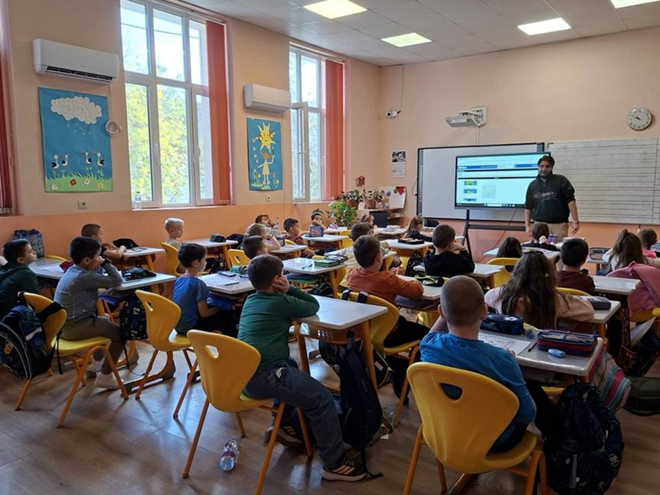
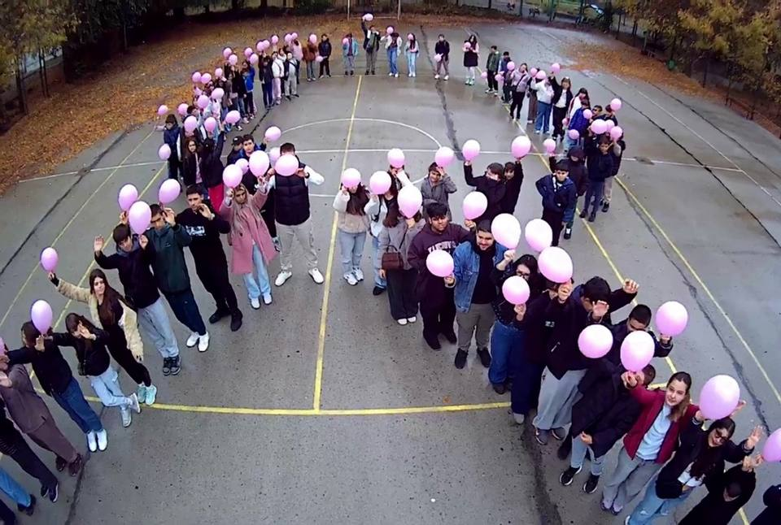
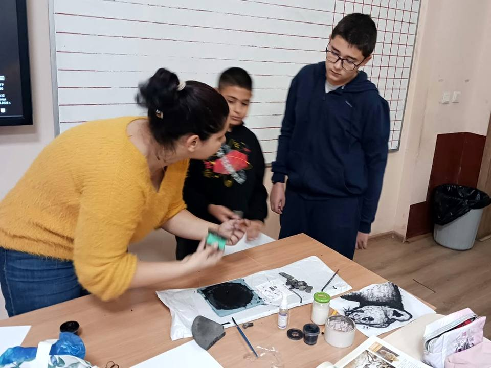
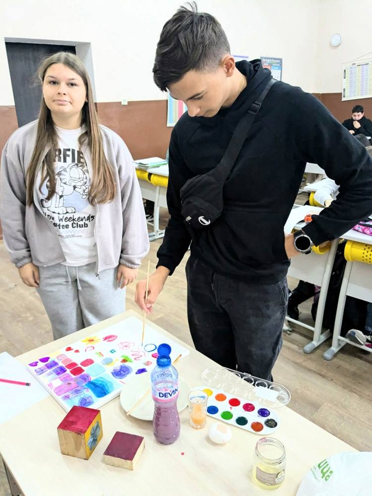
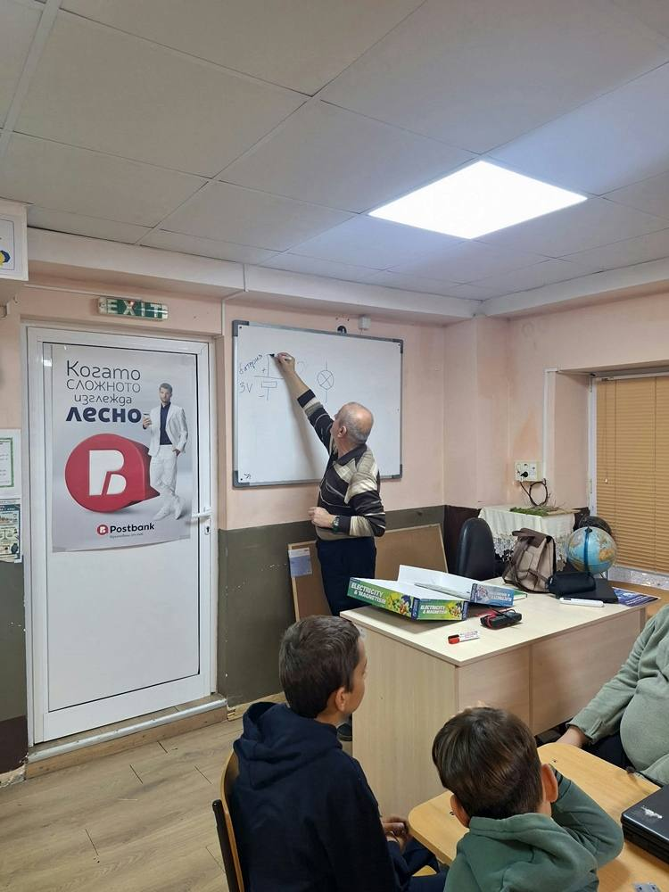
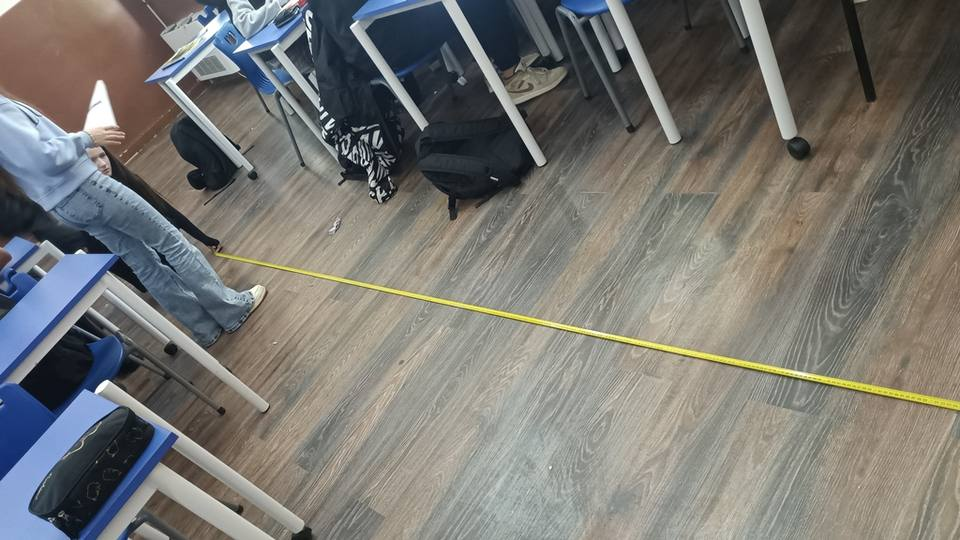
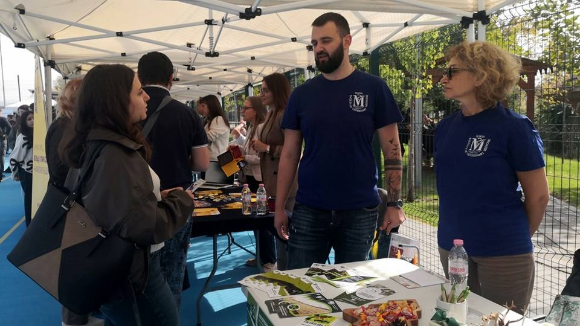
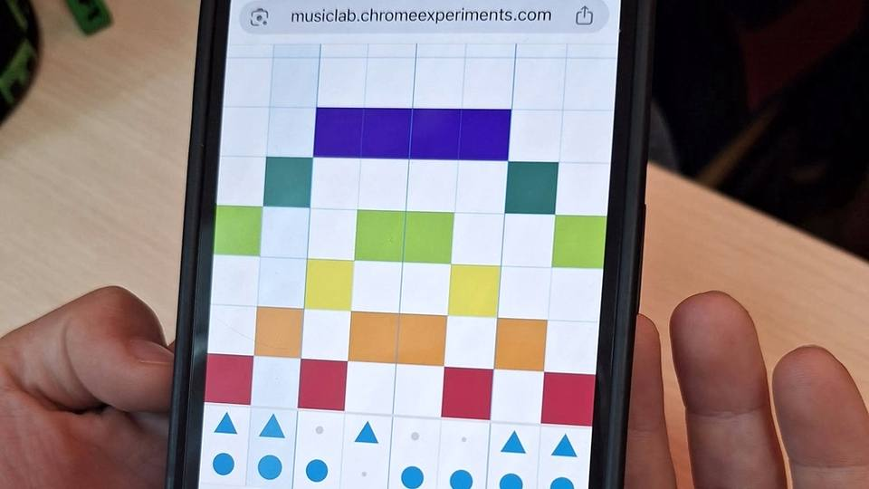
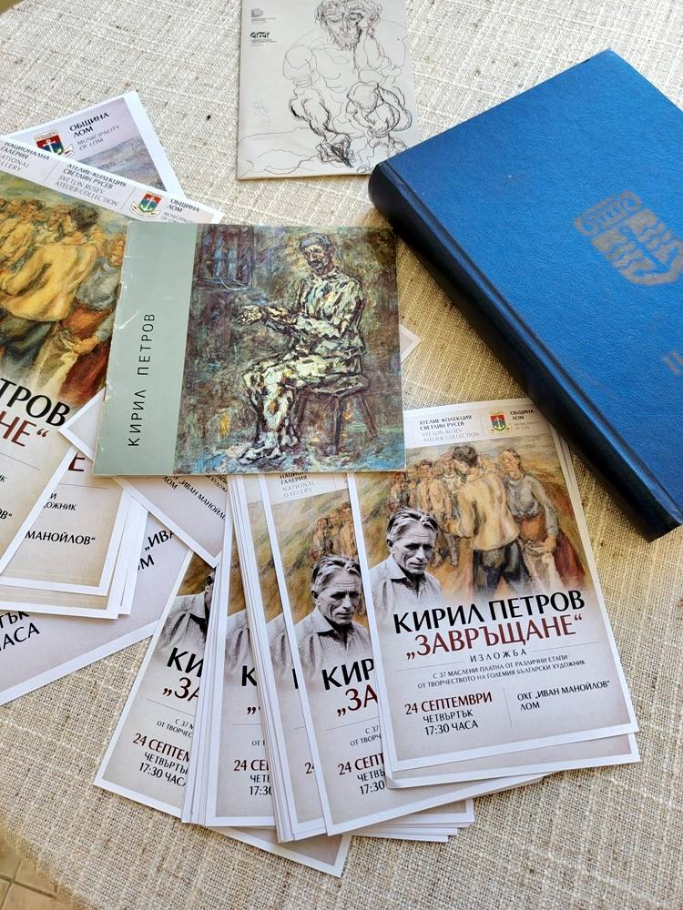

Новини
Какво се случва в училището.

Първокласници откриха магията на програмирането по време на Европейската седмица на кодирането!
Може ли едно житно зрънце да ни отведе в света на програмирането? Разбира се! Нашите първокласници доказаха, че когато любопитството срещне въображението, ученето се превръща във вълнуващо…

Почит към нашия патрон
Днешният неучебен, но присъствен 26 октомври, учениците от СУ „Димитър Маринов“ Лом посветиха на различни дейности. По нов стил, на днешната дата отбелязахме 1 80 години от рождението на нашия патрон…
Посланици на надеждата
🌸 Октомври в розово: Ученици от СУ „Димитър Маринов“ вдъхновяват и информират в борбата срещу рака на гърдата! 🌸 През месец октомври – Световния месец за борба с рака на гърдата – нашето училище…
Да научим за роботите в СУ „Димитър Маринов“ Лом
От 10 до 25 октомври 2026 година в нашето училище се проведоха дейности с ученици от 3. А, 4. А, 4. Б, 5. А и 7. А клас, свързани с е вропейската седмица на програмирането, (EU Code Week) , която…

Интердисциплинарен урок по история и изобразително изкуство
К ак са изразявали своите вярвания праисторическите хора и как са създавали боите, с които са оставили следи за поколенията? На тези въпроси потърсиха отговор учениците по време на интердисциплинарен…

🎨 Изкуство, традиции и цветове в часовете по изобразително изкуство!
В един творчески и вдъхновяващ час учениците от 8 клас под ръководството на учител Мария Крумова се запознаха с техниката на яйчената темпера , сами създадоха боите и рисуваха с тях, откривайки…
Учене чрез споделяне – приемственост и творчество
Ученици от XI клас, изучаващи Учебна практика „Рисунка, типаж“, с ръководител Екатерина Цветанова , и XII клас, изучаващи Учебна практика „Анимация“, с ръководител Мария Крумова , се включиха в…

Споделяне на добри практики в 6. А клас
На 13. и 19. октомври 2026 г., в часа по Технологии и предприемачество с 6. А клас в СУ „Димитър Маринов“ град Лом , учителят Весеслава Велкова покани инж. Борислав Чакъров – магистър по…

Физиката около нас: Как деветокласниците свързаха теорията с реалния живот чрез прецизни измервания
На 8 и 9 октомври 2026 г. учениците от 9. А клас, под менторството на учителя инж. Борислав Чакъров , проведоха самостоятелно практическо лабораторно упражнение на тема „Провеждане на физично…

Нашите ученици – с поглед към бъдещето!
На 7 октомври 2026 г. ученици от Х, ХI и ХII клас на СУ „Димитър Маринов“ – гр. Лом , взеха участие в представянето на университетите в България, проведено в Младежки център – гр. Монтана. Събитието…

Музика, технологии и творчество в час!
🎶 В час по музика петокласниците използваха Chrome Music Lab , за да създадат свои мелодии и ритми. Чрез интерактивната платформа те експериментираха със звуците и откриха нов, забавен начин да…
Учене чрез споделяне – приемственост и творчество
Фотография и живопис – среща на два визуални свята В часовете по Визуални изкуства – фотография с преподавател Верислава Михайлова и Учебна практика – Живопис с преподавател Екатерина Цветанова , се…

Учене чрез споделяне – приемственост и творчество – II
Тази седмица учениците от XII клас на СУ „Димитър Маринов“ град Лом с ръководител Екатерина Цветанова се включиха в обучение в друга физическа среда на тема: „Изкуство, театър и книга“ , което ги…
Учене чрез споделяне – приемственост и творчество в СУ „Димитър Маринов“ Лом
По случай откриването на новата учебна година на третия етаж в сградата на ПГ „Найден Геров“ е представена изложба от ученически творби, подбрани и аранжирани от Екатерина Цветанова, учител…
Гордеем се с нашите ученици!
В периода 3 – 8 август 9 ученици от гимназиален етап на СУ „Димитър Маринов“, град Лом, взеха участие в национален форум за обучение и представяне на добри практики по Национална програма „Изучаване…
Кратки съобщения
Програма за 26.10.2026 г.
Програма за заниманията на 26.10.2026
Свободни места към 23.10.2026 г.
Свободни места в паралелките към дата 23.10.2026
Свободни места към 09.10.2026 г.
Свободни места в паралелките към дата 09.10.2026
Свободни места към 01.10.2026 г.
Свободни места в паралелките към дата 01.10.2026
Покана
Свободни места към 11.09.2026 г.
Свободни места в паралелките към дата 11.09.2026
Свободни места към 01.09.2026 г.
Свободни места в паралелките към дата 01.09.2026
Свободни места към 17.08.2026 г.
Свободни места в паралелките към дата 17.08.2026
Покана за Обществен съвет
Покана за заседание на обществения съвет при СУ „Димитър Маринов“ гр.
По-старите новини са в архива на стария сайт.